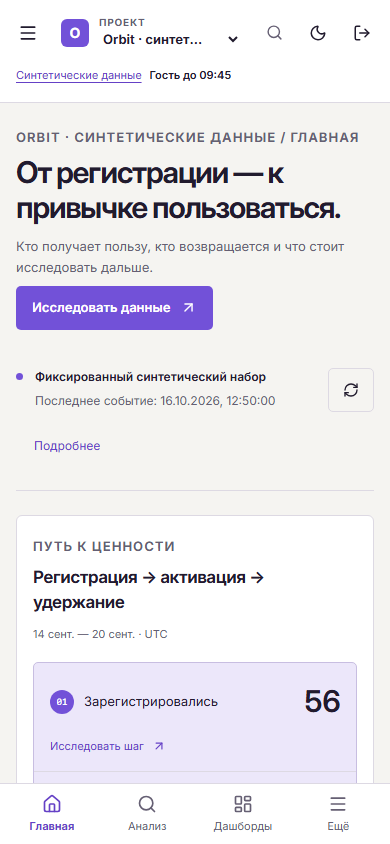
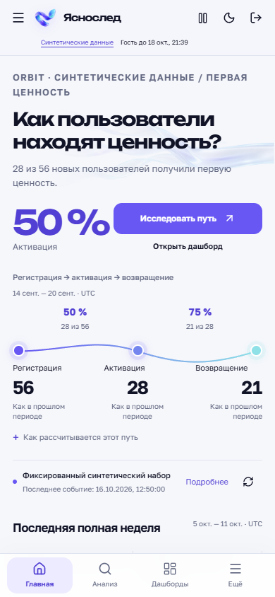
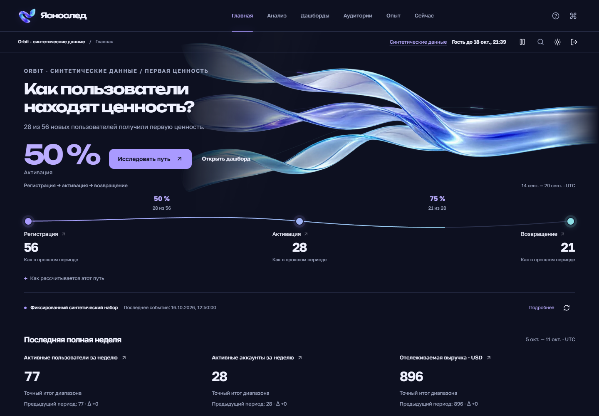
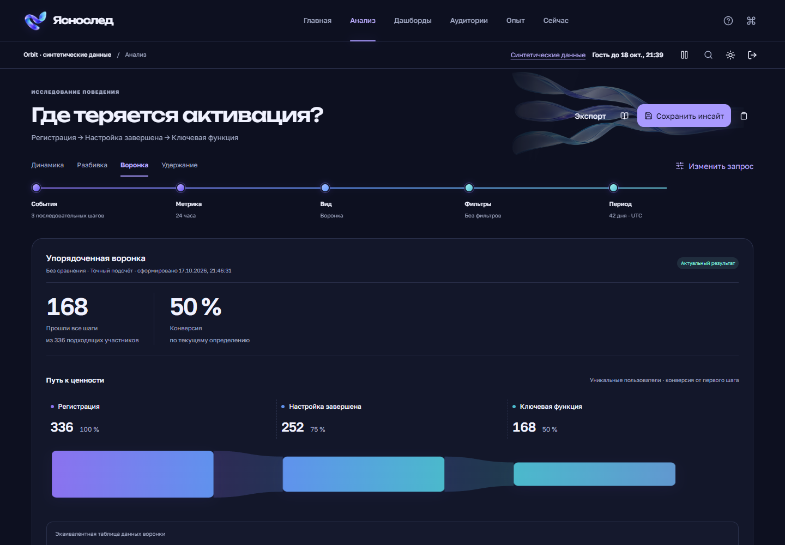

M19 → M20 · реальное приложение
Новое имя.
Единая система.
Прямое сравнение с предыдущей версией M19. Те же синтетические события и рабочая логика. Новая композиция, бренд, типографика, темы и движение.
Анализ · компьютер
Реальные скриншоты обеих версий. Воронка 336 → 252 → 168 рассчитывается по синтетическим событиям.


Главная · телефон
Реальная адаптация на 390 × 844: новый знак, вопрос, численный ответ и непрерывный путь к ценности.


Связная визуальная система
Один оптический след.
Во всём продукте.
Иллюстрация создаёт характер. Числа, графики, фильтры, таблицы и действия остаются настоящим интерфейсом с серверным состоянием.
Выбранный макет → реализация
Слева — изображение imagegen с иллюстративными числами. Справа — рабочая Главная с реальными определениями метрик.


Тёмная среда · та же система
Рабочие экраны новой версии. Все изображения открываются в полном размере.

